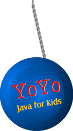
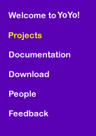

| YoYo |
Projects |
|  |
Things to Do We have many different activities planned for YoYo. To date, we have constructed versions of StarLogo, Cricket Logo and a Video Game player. StarLogo for YoYo StarLogo is a programmable modeling environment for exploring the behaviors of decentralized systems, such as bird flocks, traffic jams, and ant colonies. It is designed especially for use by students. It took about 3 days to make our first working version of StarLogo by porting it from the Macintosh. This past summer, two MIT undergraduates fleshed out the program and have turned it into an easy to use, portable StarLogo. We're currently at work improving its performance and putting the finishing touches on it. Look for its release in a few months. Cricket Logo for YoYo The Cricket is a tiny computer, powered by a 9 volt battery, that can control two motors and receive information from two sensors. Crickets are equipped with an infrared communication system that allows them to communicate with each other. Crickets are programmed in a dialect of the Logo programming language, a procedural language that includes constructs like if, repeat, and loop, global and local variables, 8-bit numeric operations (addition, subtraction, multiplication, division, comparison), motor and sensor primitives, timing functions, a tone-playing function, and a random number function. We ported Cricket Logo from LCSI's MicroWorlds Logo to YoYo. (It wasn't hard, YoYo is simply a variant of Logo.) We have a copy available here for the PC, but it won't do much good unless you have a Cricket. Crickets are currently only available to E&L sponsors and research collaborators. Here's a version for Java 1.1 (if you've got either Sun's JDK 1.1.x or JRE 1.1.x). Video Games For his master's thesis, Andrew Begel developed a YoYo-based video-game construction kit. The kit integrates YoYo with a pre-release version of Intel Animation for Java, Intel Corporation's new Java animation package. The kit has been used to create versions of classic video games such as Space Invaders, Pacman, and Frogger. The goal is to create an online community of young game designers. Kids will put their YoYo-based games on the Web, where other kids will be able to play the games, provide feedback and suggestions, or even modify and extend the games. Unfortunately, Intel cancelled their IAJ project last year, so the video game kit doesn't work anymore. Look for the kit's reincarnation in the next few years. |
|
|
|
|
Welcome | Projects | Documentation | Download | People | Feedback |
|
| Last Modified: 12/9/98 |